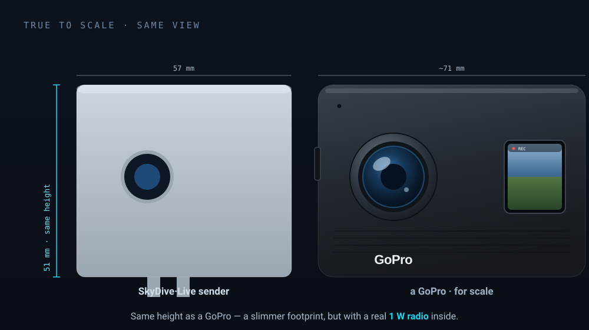
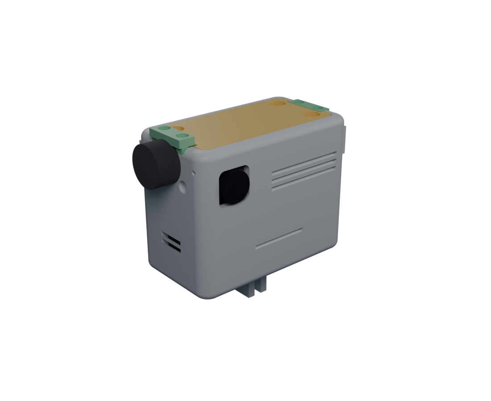
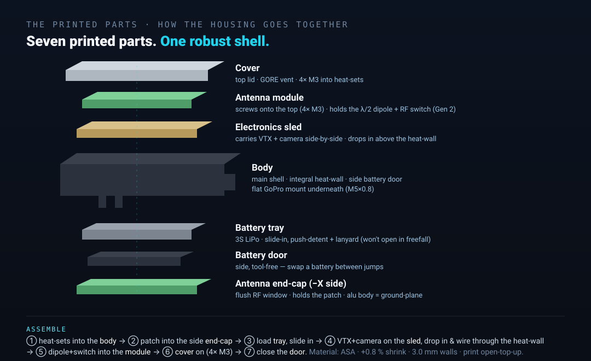
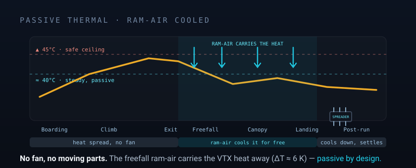
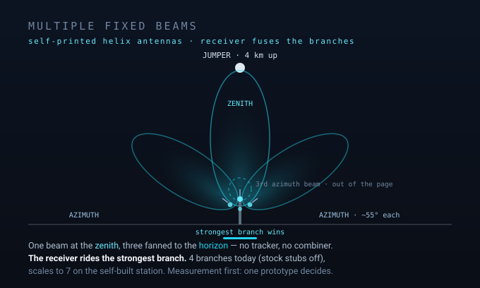
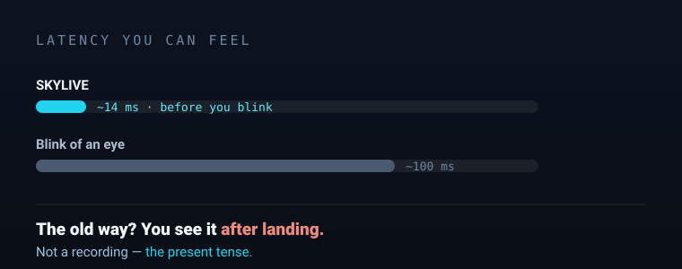

What it is
Action-cam size. 1-watt reach.
Same height as a GoPro, same helmet mount — but inside is a real 1 W radio that closes 4 km. And here's the whole path the picture takes, helmet to the waiting-room TV.



The jump. Live.
Real-time video from freefall — the jumper's POV, streamed live from ~4 km up to a receiver at the drop zone, onto the big TV in the waiting area. Own radio link, no internet, ~14 ms latency, Class-E.
Today the ground sees a speck in the sky. SkyDive·Live puts the jumper's own view on the screen — the same moment, ~14 ms later. No skydiving knowledge required.

Same height as a GoPro, same helmet mount — but inside is a real 1 W radio that closes 4 km. And here's the whole path the picture takes, helmet to the waiting-room TV.

A GoPro-form-factor transmitter that rides on the helmet. Drag to inspect it, or pull it apart to see what's inside.
drag to rotate · toggle assembled ↔ exploded
Spin the jumper head-down (head-first) and his own body blocks the antenna. Watch one antenna drop. Switch on the second — the image holds.

Worst-case omni TX, unfavourable attitude — full link budget & thermal model in ENGINEERING.md →
Two builds, one idea — MK2 (simplest, 3 PETG parts) or v5 (dual-antenna, 7 ASA parts, shown below). Each has its own chronological plan in the build guide; STLs are on the v1.0 release.

Cooling that thinks for itself, two antennas at the ground, and a picture that's there before you blink.


